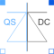

IdealACDCConverterIdeal AC DC converter |

|
Information
This information is part of the Modelica Standard Library maintained by the Modelica Association.
This is an ideal AC DC converter, based on a power balance between QS circuit and DC side. The parameter conversionFactor defines the ratio between averaged DC voltage and QS rms voltage. Furthermore, reactive power at the QS side is set to 0.
Note:
Of course no voltage or current ripple is present, neither at the QS side nor at the DC side. At the QS side, only base harmonics of voltage and current are taken into account. At the DC side, only the mean of voltage and current are taken into account.
Parameters (1)
| conversionFactor |
Value: Type: Real Description: Ratio of DC voltage / QS rms voltage |
|---|
Outputs (2)
Connectors (4)
| pin_pQS |
Type: PositivePin |
|
|---|---|---|
| pin_nQS |
Type: NegativePin |
|
| pin_pDC |
Type: PositivePin |
|
| pin_nDC |
Type: NegativePin |
Components (3)
| vQS |
Type: ComplexVoltage Description: AC QS voltage |
|
|---|---|---|
| iQS |
Type: ComplexCurrent Description: AC QS current |
|
| sQS |
Type: ComplexPower Description: AC QS apparent power |
Used in Examples (1)
|
Modelica.Electrical.QuasiStationary.SinglePhase.Examples
Rectifier example |